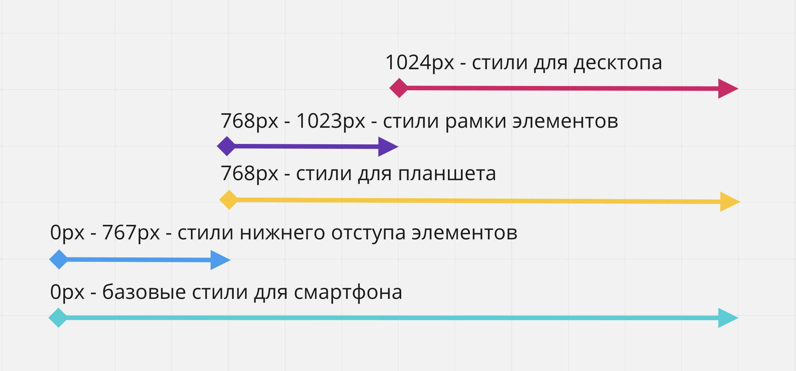

Медиа-запросы - это то, что делает возможным создание современных адаптивных веб-страниц, которые одинаково хорошо выглядят на любом экране, будь то десктоп или смартфон. Всё сводится к применению того или иного CSS-правила к элементу, в зависимости от размера экрана пользователя (вьюпорта браузера), возможностей устройства или пользовательских предпочтений.
Алгоритм применения стилей следующий:
Человеческим языком, медиа-запросы это инстуркция по типу: «когда страницу открыли на десктопе, я хочу, чтобы текст веб-страницы был красным, а при открытии на телефоне, цвет текста должен быть зелёным».
Медиа-запрос это просто специальная CSS-конструкция, которая начинается с директивы @media, за которой может следовать тип устройства (media-type) и медиа-функции (media feature) - выражения проверяющие характеристики устройства (например ширину вьюпорта). Медиа-функция это логическое выражение, которое возвращает истину (верно) или ложь (не верно).
Например, если необходимо сделать фон
оранжевым при ширине вьюпорта 900px и шире, необходимо записать следующий медиа-запрос.Человеческим языком это можно прочитать как: «если страница отображается на экране, и ширина этого экрана не менее 900 пикселей, необходимо применить указанное CSS-правило».
Цвет фона
будет изменяться в зависимости от ширины вьюпорта, укзанной в медиа-запросах.Условие проверки может быть настолько сложным или простым, насколько этого требует ситуация. В большинстве случаев достаточно указать медиа-тип устройства (чаще всего screen), и проверить только ширину вьюпорта.
Если тип устройства не указан, будет использовано значение по умолчанию - all, то есть любой.
В SASS медиазапросы можно вкладывать прямо в селектор.
Медиа-тип (тип носителя) используется для описания типа устройства, на котором была открыта веб-страница в браузере. Раньше было очень много типов, к счастью сегодня их осталось всего четыре.
Разберём две самые часто используемые медиа-функции для определения ширины вьюпорта.
То есть указывается максимальная и минимальная допустимые ширины вьюпорта, при которых применяются правила из медиа-запросов.
Если представить ширину вьюпорта как прямую от 0 до бесконечности, то мы описываем промежуток, на котором необходимо применить какие-то стили.

При изменении ширины вьюпорта в примере, до 600px фон
будет желтого цвета, а после 900px - зелёного. В промежутке от 601px до 899px - цвет белый, значение указанное по умолчанию, потому что ни один медиа-запрос не подойдёт.А как описать промежуток, например от 600px до 900px? Необходимо использовать логические операторы для составных медиа-функций.
Медиа-тип и медиа-функции могут быть разделены необязательными логическими операторами not, and и only - значение по умолчанию. Полный синтаксис медиа-запроса выглядит следующим образом.
Оператор and (буквально «И») можно использовать не только между типом носителя и медиа-условием, но и для связывания нескольких медиа-функций с проверками значений.
Медиа-запрос из примера сработает только если веб-страница открыта на экране, а ширина вьюпорта в диапазоне от 400px до 800px.

Оператор not (буквально «НЕ») позволяет сделать отрицание, то есть отменить медиа-запрос. Ключевое слово not добавляется в начало медиазапроса и применяется ко всему запросу целиком. Используется очень не часто.
Например, запишем условие при котором стили должны примениться везде кроме печати.
При использовании оператора not обязательно должен быть указан тип носителя, потому что по умолчанию для него будет установлено значение all и выражение not all будет читаться буквально как «не все», и медиа-запрос не выполнился никогда.
Оператор , (буквально «ИЛИ») позволяет указать набор выражений, при выполнении хотябы одного из которых, необходимо применить стили.
Например, необходимо применить стили промежутке до 600px, или после 900px.
То есть это просто перечисление набора медиа-запросов при которых должны примениться стили. Это можно записать как два разных медиа-запроса. Но тогда код стилей body будет дублироваться.
В будущих редакциях CSS, оператор , будет заменён на оператор or, что переводится как или.
Ничто не мешает браузеру применить более одного медиа-запроса одновременно, если они подходят по условию. Медиа-запросы не добавляют специфичности к селекторам, которые они содержат, но порядок правил по-прежнему имеет значение. Это значит что правила находящиеся в медиа-запросах участвуют в стандартном каскадировании при составлении финальных стилей элемента.
Например, в предыдущих примерах, переопределялся цвет фона элемента body, это можо увидеть в инструментах разработчика.

При этом переопределяются только одинаковые свойства, а не всё правило целиком. Благодаря этому можно делать слоёный пирог из стилей, не дублируя предыдущие, которые подходят и для текущего медиа-запроса.
Окно просмотра (вьюпорт, viewport) - это видимая, прямоугольная область веб-страницы, не включающая адресную строку, панель закладок и другие служебные элементы браузера.
Мобильные браузеры отображают веб-страницу во вьюпорте, который шире чем физический экран устройства. По умолчанию, ширина вьюпорта в мобильных браузерах зависит от производителя устройства, не совпадает с размером экрана устройства, и чаще всего равна 980px. Это значит, что мобильный браузер считает это величиной, относительно которой он должен применять медиа-запросы.
То есть медиа-запросы ориентированные на мобильные устройства просто не применятся, или будут переопределены в мобильном браузере. Например, при открытии веб-страницы на экране шириной 400px, применится медиа-запрос с min-width: 768px переопределив мобильные стили, и мы увидим вариант страницы для планшетов, хотя открыли на телефоне.
Страницы, адаптированные для просмотра на разных устройствах, должны содержать в разделе
мета-тег viewport. Он сообщает браузеру, каким образом нужно контролировать размеры и масштаб вьюпорта.
Для того чтобы перейти в отзывчивый режим в браузере Chrome, необходимо открыть инструменты разработчика и нажать на иконку 1. Появятся дополнительные инструменты для работы с отзывчивой вёрсткой. Чтобы выйти из этого режима, необходимо нажать на иконку 1 ещё раз.
Для того чтобы изменить ширину вьюпорта простым растягиванием, используется элемент 2. Эффект такой, как будто растягивается или сжиматся окно браузера, тем самым изменяя ширину вьюпорта.
В верхней части инрументов находится набор дополнительных элементов управления.
Немного ниже набора дополнительных элементов управления, находится панель быстрого изменения ширины вьюпорта по стандартным точкам перелома.
Точка перелома (breakpoint) - это размер вьюпорта, при котором вся вёрстка или её отдельные части изменяют свои стили, то есть меняется дизайн.

Изначально веб-страницы были с фиксированной вёрсткой. Если контейнер был в ширину 800 пикселей - он так и оставался 800 пикселей, на каком экране его ни открывай, большом или крохотном. В современном мире разнообразия мобильных устройств, такой подход устарел.
В современном вебе используются новые подходы при создании веб-сайтов. Они сочетают в себе элементы «резиновой» вёрстки и новые, современные приёмы, такие как адаптивность (adaptive) и отзывчивость (responsive). Техники «адаптивной» и «отзывчивой» вёрстки отличаются тем, как задаётся ширина контейнера и вложенных в него элементов.

Отзывчивая (responsive) веб-страница - имеет несколько вариантов отображения, переходы между ними плавные, элементы и контейнер тянутся как резиновые. При изменении размера вьюпорта - блоки плавно ужимаются или растягиваются, а когда наступает точка перелома (breakpoint) - меняют своё расположение так, чтобы оптимально занять всё свободное пространство по горизонтали.
Адаптивная (adaptive) веб-страница - имеет несколько вариантов отображения, и в отличии от отзывчивой страницы - буквально. Дизайн изменяется рывками в жёстко заданных точках перелома, и не тянется между ними.
При составлении медиа-запросов нужно ориентироваться на точки перелома дизайна, т. е. такие значения ширины вьюпорта, в которых дизайн существенно меняется. Определить их можно по макету нарисованному дизайнером.
Перейдите по ссылке в полную версию примера и изменяйте ширину окна браузера, так будет видна разница между отзывчивым и адаптивным контейнерами. Цвет контейнеров меняется в каждой из произвольно выбранных точек перелома 600 и 900 пикселей.
Какой подход использовать? Всё зависит от дизайна, типа веб-сайта и финансовых возможностей заказчика. Для большинства веб-сайтов малого и среднего бизнеса достаточно адаптивной версии. Отзывчивая вёрстка дороже, так как делать её дольше, но она незаменима в интерфейсах современных веб-приложений. Иногда бизнес-задачи лучше выполнит отдельная мобильная версия или вообще нативное приложение вместо веб-сайта.
Исторически сложилось так, что дизайнеры начинали разработку дизайна сайта для большого экрана, то есть первый и «главный» дизайн делался для рабочего стола компьютера, так как предполагает большую функциональность.
Проблема такого подхода в том, что приоритет отдаётся пользователям компьютеров и ноутбуков, хотя сейчас, по статистике, доминирует мобильный трафик. Многие элементы дизайна и функционала, которые отлично смотрятся и работают на рабочем столе компьютера, просто невозможно успешно перенести на мобильный экран.
Стратегия Mobile-first идёт от обратного - сначала делается мобильная версия, после чего планшетная и десктопная. Это делает актуальную информацию легко доступной и позволяет скрыть или изменить элементы на любом экране.
Веб-сайт должен быть хорошо оптимизирован для поисковых систем (SEO) и отвечать всем требованиям UX (user experience), что бы прибывание пользователя на сайте было максимально удобным и понятным через его мобильное устройство. Поэтому одни из самых важных требований в Mobile-first разработке это:
При разработке веб-сайта у такого подхода есть большие преимущества.
Технически реализация Mobile-first довольно проста - стили для мобильных устройств это базовые стили вне медиа-запросов, после чего, для каждой точки перелома добавялется медиа-запрос в котором переопределяются необходимые базовые стили, стили из предыдущего промежутка или добавляются новые. Поэтому в медиа-запросах, в основном, используется медиа-функция min-width.
При таком подходе создаётся легковесная версия стилей для мобильных устройств, а все стили для более широких экранов закрываются внутри соответствующих медиа-запросов. При этом HTML-разметка не меняется.
Плюс такого подхода заключается в том, что для мобильных стилей практически никогда не нужно задавать позиционирование, например при помощи Flexbox, потому что весь контент идёт в одну колонку друг за другом - дефолтное поведение блочных элементов в стандартном потоке документа. Это значит, что в медиа-запросах для более широких экранов, не придётся переопределять позиционирование - большой плюс.
На илюстрации ниже показана структура медиа-запросов и стилей для простой страницы с 2-мя точками перелома 768px и 1024px. CSS-правила внутри медиа-запросов просто добавляют новые стили или переопределяют предыдущие.

Перейдите в полную версию редактора примера по ссылке и изменяйте ширину окна браузера. Заметьте, изначально даже нет @media, так как стили пишутся для узкого экрана как база. Уже потом, при написании стилей для более широких экранов, мы добавляем медиа-запросы.
При таком подходе имеем только плюсы:
Для большинства ситуаций достаточно использовать min-width и добавить либо переопределить стили. Тем не менее, бывают ситуации когда использование медиа-функции max-width делает код чище и читабельнее.
Представим такую ситуацию - в последнем примере элементам необходимо добавить нижний отступ только на мобильном устройстве, то есть до 767px (с 768 начинаются стили планшета). А для планшетного промежутка, от 768px до 1023px, необходимо чтобы у элементов появлялась рамка.
Использование только min-width приведёт к тому, что в стилях медиа-запроса c min-width: 768px придётся обнулить нижний отступ элементов. А в стилях медиа-запроса с min-width: 1024px будем обнулять стили рамки. Не самое лучшее решение,
В таких ситуациях хорошей практикой будет закрыть специфичные стили в определёных промежутках, и поможет нам в этом медиа-функция max-width.
Перейдите в полную версию редактора примера по ссылке и изменяйте ширину окна браузера.
Чтобы сделать контейнеры отзывчивыми до определённого момента,
т.е. чтобы до определённого момента расширения viewport они тянулись,
а по достижении этой ширины зафиксировались, нужно прописать медиа-запрос
@media screen and (min-width:480px) { width: 480px }. Что означает, что при достижении ширины вьюпорта 480рх
зафиксируй контейнер на такой ширине.
Медиа-запрос прописывается внутри селектора в SASS.
Таким образом страница будет сохранять пропорции до момента достижения следующей точки перелома - например до ширины планшета.
Для того чтобы прописать переход на другой параметр, нужно прописать например @media screen (min-width: 768px) { width:768px; }, что означает что при достижении ширины экрана в 768рх и выше, зафиксируй контейнер на ширине 768рх.
Формула для calc для расчета ширины элемента для flex контейнера:
Если в своё макете для десктопа удалить все флексы и возможно марджины, теоретически должна получиться вёрстка для мобильной версии.
Скрывание вторичного контекта
Бывает, что некоторые секции десктопной версии не нужны на мобильной.
Тогда в свойствах секции, которую нужно скрыть до определённого момента надо прописать
@media screen and (max-width: 767px) { display: none; }.
Это означает что у этой секции от 0 до ширины в 767рх display: none;.
Первым делом для того чтобы страница масштабировалась надо подключить мета тег
meta name="viewport" content="width=device-width initial-scale=1.0"
Сейчас он прописывается автоматически.
Надо в backdrop добавить свойство overflow-y: hidden;
Это делается с помощью JS.
Суть в том, чтобы на body задать свойство overflow: hidden; при условии открытой модалки.
Если просто добавить на body это свойство, то оно обрежет body по границам вьюпорта и не будет прокручиваться вообще.